Explorando la creatividad a través del arte: el taller de dibujo y pintura de FIME
Israel Alejo
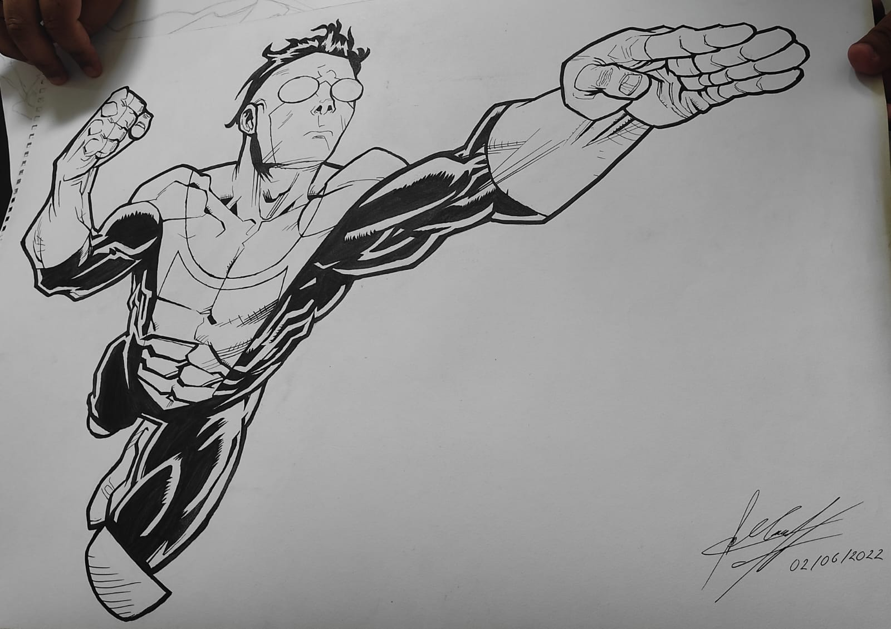
Recientemente, tuvimos el privilegio de conversar con Moisés Fernando, un miembro entusiasta del taller de dibujo y pintura de la Facultad de Ingeniería Mecánica y Eléctrica (FIME). Moisés compartió con nosotros sus experiencias personales, así como el ambiente y las dinámicas que hacen de este taller un lugar especial para los amantes del arte.
Para Moisés, el impulso inicial para unirse al taller fue su deseo de nutrir su creatividad desde una edad temprana. Recuerda con cariño sus primeros trazos en el kínder, y cómo, a través de la práctica y la influencia de un primo, su pasión por el dibujo fue creciendo. Desde entonces, ha perfeccionado su técnica y ha encontrado en el taller de FIME un espacio donde su creatividad puede florecer y ser compartida con otros entusiastas del arte.
El ambiente en el taller es descrito por Moisés como divertido y amigable, donde la camaradería entre los miembros es evidente. Se siente como en casa mientras trabaja en sus obras, que van desde dibujos tipo cómic y manga hasta trabajos realistas con tinta.
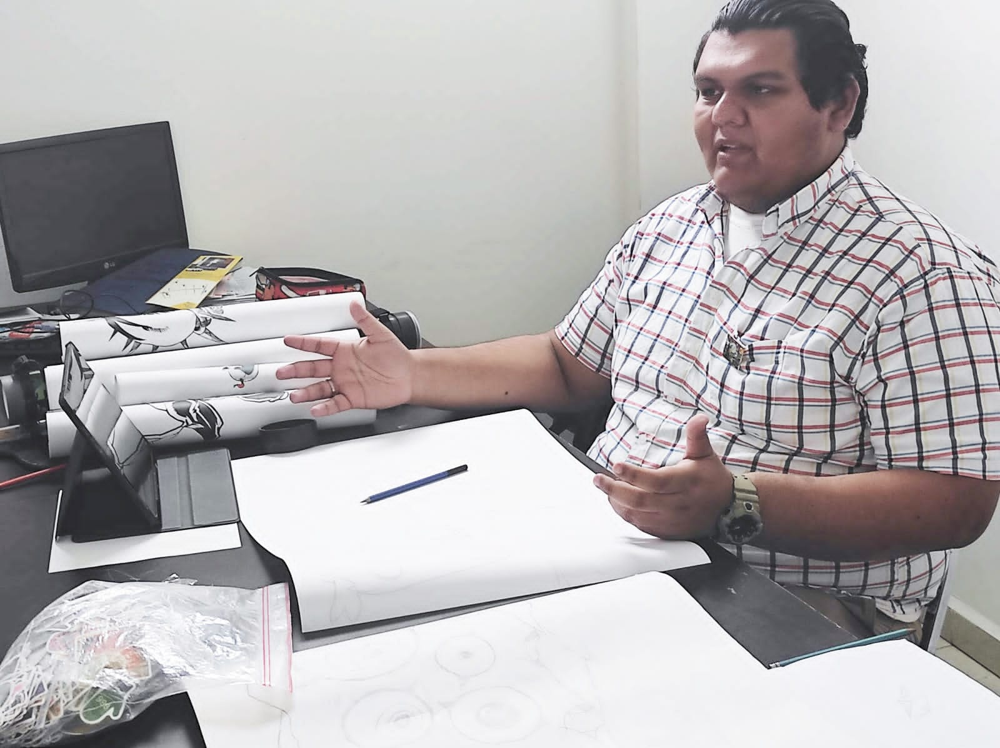
La interacción y colaboración entre los estudiantes en el taller son fundamentales. Moisés destaca las dinámicas de grupo y la planificación de proyectos temáticos, como el desafío Inktober, que fomentan la creatividad y el compañerismo entre los participantes.
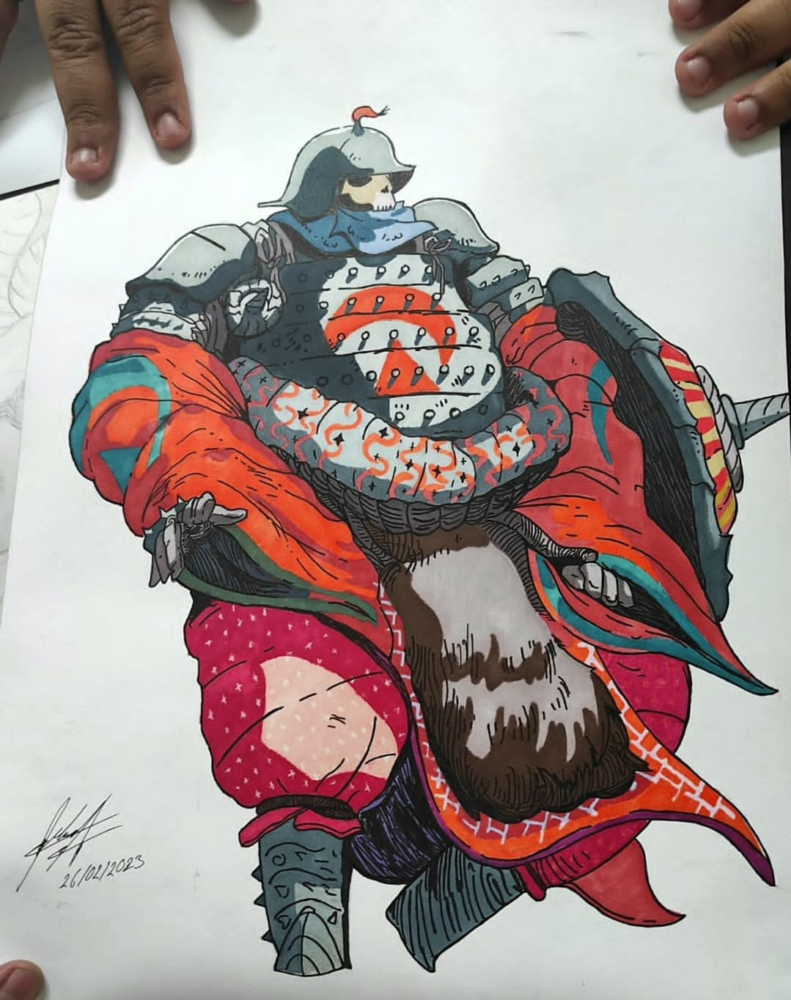
En cuanto a participación en eventos, Moisés ha tenido la oportunidad de exhibir su trabajo en varias ocasiones, desde su infancia hasta la edad adulta. Actualmente, el taller se prepara para un evento titulado "Cartas del mar al alma", donde los estudiantes crearán obras relacionadas con el agua.
A pesar de la satisfacción general con el taller, Moisés y sus compañeros desean más apoyo y reconocimiento por parte de la facultad, especialmente en términos de espacio y recursos. Sin embargo, están comprometidos a seguir mejorando y creando arte que inspire y emocione.
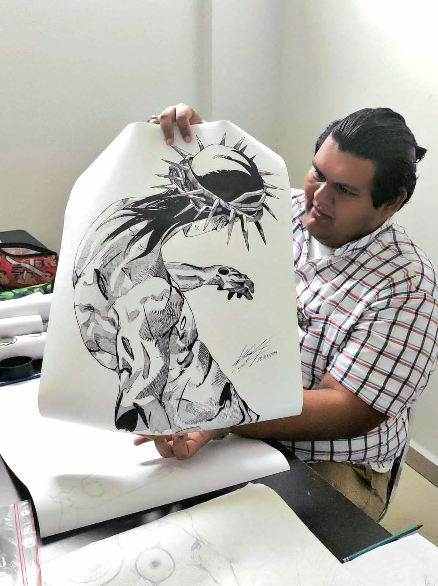
En resumen, el taller de dibujo y pintura de FIME es mucho más que un espacio para crear arte; es un lugar donde los estudiantes pueden explorar su creatividad, desarrollar su técnica y forjar amistades duraderas mientras comparten su amor por el arte en todas sus formas.
El taller se lleva a cabo los lunes, miércoles y viernes de 2:00 p.m. a 4:00 p.m. en el Centro de Desarrollo Físico y Cultural, ofreciendo a los estudiantes una oportunidad única para sumergirse en el mundo del arte y la expresión creativa.
EVENTOS PROXIMOS
CONCIERTO HOMENAJE
Lunes 11 - 8:00 PM - AULA MAGNA
PROYECCION DO THE RIGHT THING
Miercoles 13 - 11 AM y 6 PM - CAPILLA ALFONSINA
INICIO FERIA UANLEER
Miercoles 13 - 6 PM - COLEGIO CIVIL
CONCIERTO OSUANL
Jueves 14 - 8:00 PM - TEATRO UNIVERSITARIO
FERIA UANLEER
>Miercoles 13 a Domingo 17 - COLEGIO CIVIL
Ciclo cine Alfonsino: Do The Right Thing
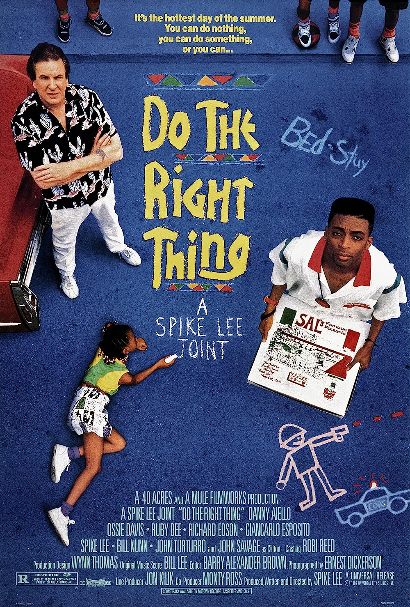
Juan Méndez
Esta semana en la Capilla Alfonsina se proyectará la película Do The Right Thing del director Spike Lee. Esta película narra un día en la vida de un vecindario de Brooklyn en la ciudad de Nueva York. La película cuenta con un reparto lleno de estrellas ya establecidas como Ossie Davis y Ruby Dee, y de algunas que encontrarían mucho éxito en el futuro, como Samuel L. Jackson y Giancarlo Esposito.
En este vecindario viven personas de diferentes etnias, creencias y culturas, y a lo largo de la película vemos las distintas perspectivas de los habitantes en lo que es considerado el día más caluroso del año. De igual manera que la temperatura va incrementando a lo largo del día, las tensiones entre los diferentes grupos que viven juntos también incrementan.
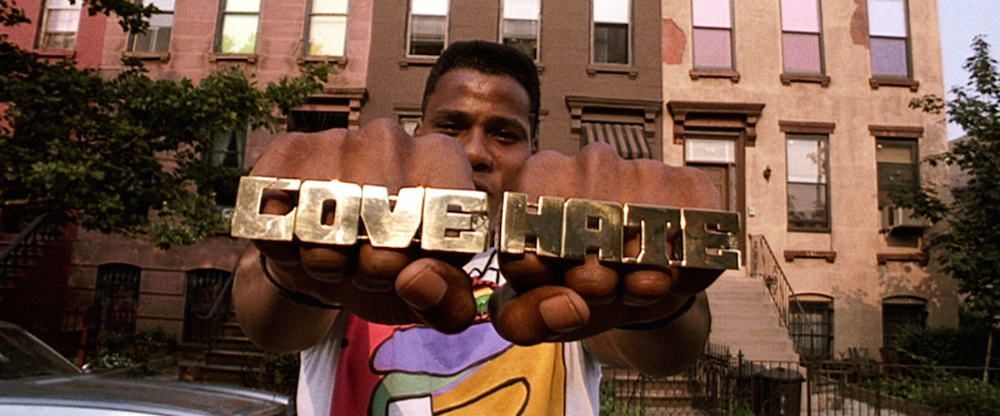
A pesar de que la película tiene un tono humorístico durante gran parte de su duración, esta no nos esconde la realidad de las personas que viven en este tipo de vecindarios, en donde la tranquilidad es algo que puede esfumarse en un instante.
Al no esconderse de la desagradable realidad del racismo, la discriminación y el odio, la película nos permite analizar las conductas de sus personajes y examinar nuestros propios prejuicios. De esta manera, la película nos enfrenta con varias preguntas sobre nosotros mismos, “¿qué haríamos en su situación?” “¿de qué manera afectan nuestros prejuicios a nuestra forma de ser? y la más importante de todas, “¿haríamos lo correcto?”
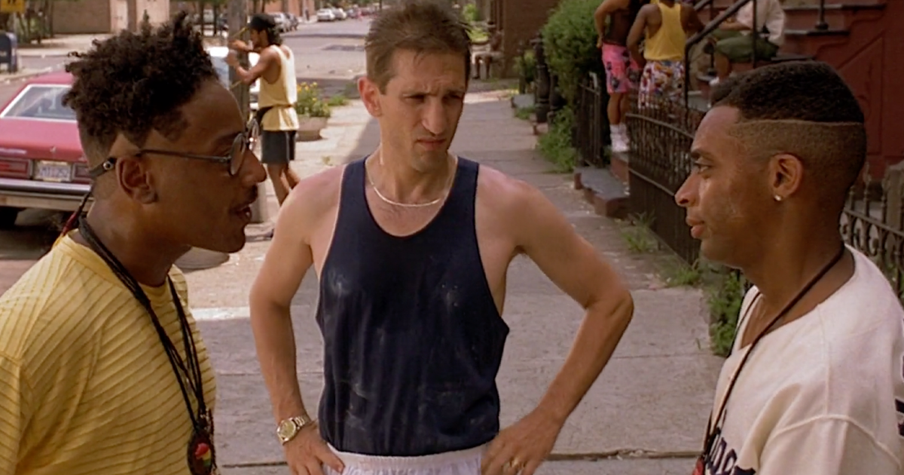
Do The Right Thing es una excelente película que balancea perfectamente entre ser una comedia entretenida y un drama que te dejara pensando sobre múltiples aspectos de nuestra sociedad, por lo que te recomendamos que en algún momento la veas. Estará disponible en la Capilla Alfonsina este próximo miércoles 13 de marzo en la Sala Minerva Margarita Villareal (horarios en la barra de eventos).
FIME también baila! Muestra de Danza UANL 2024
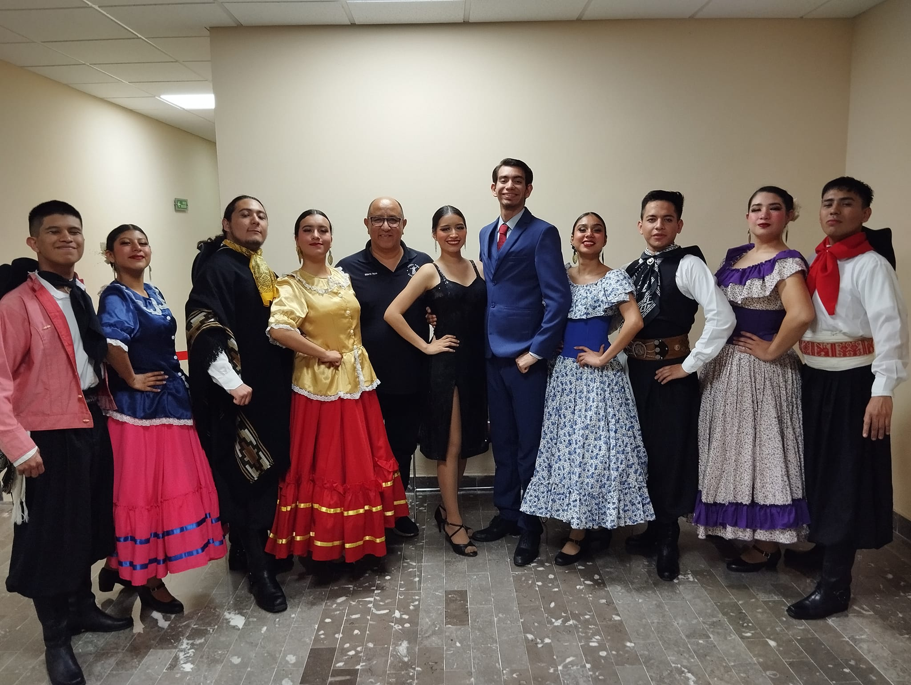
Rocío Estrada
Los pasados 5 y 6 de marzo en el Teatro Universitario de la Unidad Mederos de la UANL, la presentadora Aurora Buensuceso, condujo la presentación anual de danza, en la cual se pudieron observar diversos tipos de ritmo, desde folklore y ballet hasta danza contemporánea, moderna y urbana donde la FIME una vez más destaco con su participación con dos grupos que añadieron un toque innovador y vanguardista a la muestra de danza.
El suceso fue un espectáculo magistral que contó con la participación de 43 grupos representativos provenientes de preparatorias y facultades de la universidad donde la danza se convirtió en un lenguaje universal que unió a la comunidad estudiantil como parte de la celebración de la creatividad y expresión artística. El talento deslumbrante de más de 600 estudiantes se exhibió abarcando, desde el encanto del danzón hasta la energía explosiva del jazz.
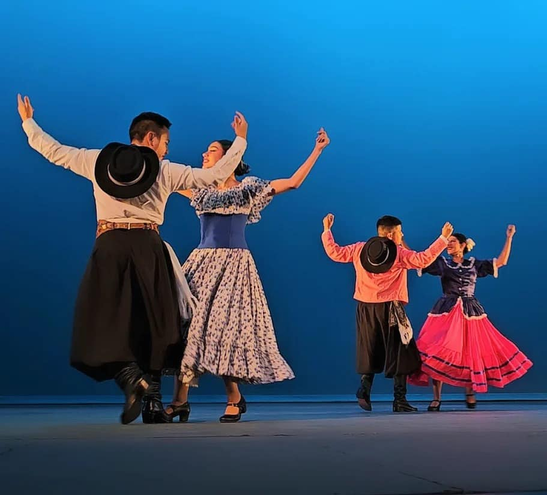
La Muestra de Danza UANL 2024 no solo fue un éxito en términos de participación y diversidad, sino también un testimonio del talento multifacético que florece en la UANL, talento que es alimentado como se podría esperar por la FIME, quien con su presentación de “La Argentina” demostró que los ingenieros e ingenieras que conforman nuestra facultad no solo tienen habilidades lógico-matemáticas, sino que también son habilidades expresándose a través de la danza.
Dragon Ball: el anime que revoluciono la industria
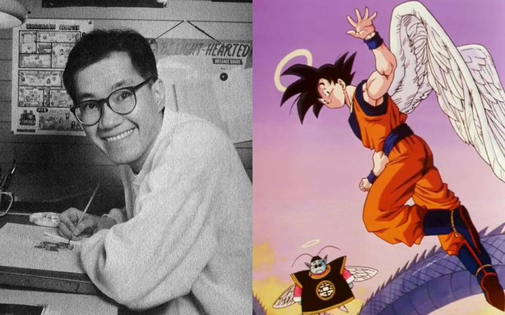
José Coronado Chávez
En esta primera publicación de la sección de anime, vamos a hablar de un anime que fue la infancia de muchos. logro convertirse en un referente en la industria del entretenimiento, te puede gustar o no pero dragón ball tiene sus méritos ya que fue uno de los animes en poder lograr poner en el ojo de occidente al Anime, desde sus inicios con el icónico Dragon Ball llego a conquistar a muchos fans en todo el mundo, luego con su secuela dragón ball Z fue un boom que estallo e hizo que tomara mucha relevancia y ya ni te cuento de Dragón Ball Super que cuando se anunció el regreso de Goku a la pantalla hizo que internet estallara.
En mi opinión dragón ball tiene muy buenos arcos, como la saga de Cell de Dragón Ball Z o el icónico torneo de la fuerza de Super. También hay películas fascinantes, resaltando Dragón Ball Super: Broly.
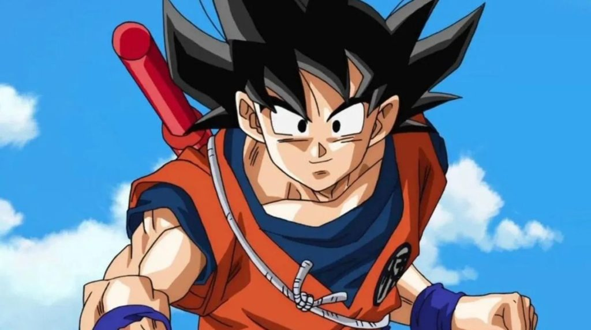
Te recomiendo que leas el manga, ya que allí el orden cronológico es más sencillo de entender para el espectador, además de que salen partes que nunca se adaptaron al anime y que a su vez se muestran arcos que todavía no han sido adaptados al anime, como la saga de moro que es un arco muy importante en el canon de dragón ball donde vemos a un Goku aprendiendo a dominar el ultra instinto.
¿Te preguntaras porque te conté todo esto? Bueno esto te lo conté para poderte dar un contexto a grandes rasgos del anime, y decirte por qué pienso que dragón ball se merece estar en donde esta desde mi punto de fanático.
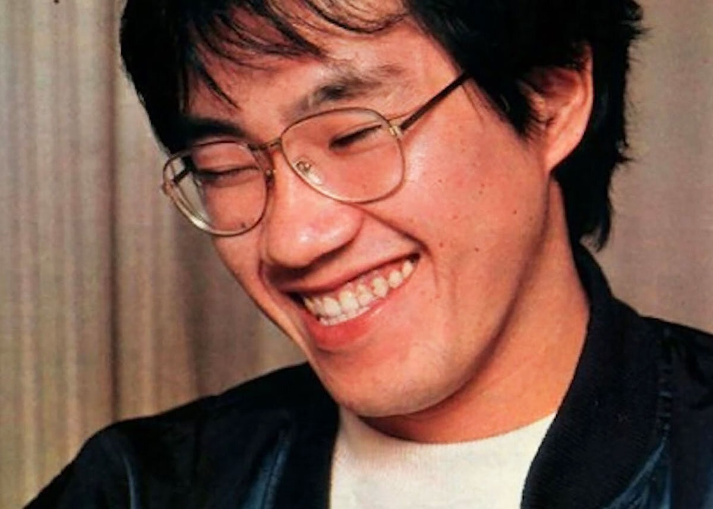
Descansa en paz Akira Toriyama (Autor de dragón ball) siempre se te recordara como uno de los autores que llevo el anime a otro nivel, poniéndolo en boca de todos, gracias a el yo conocí el anime y puede que la mayoría también le haya ocurrido lo mismo. Siempre te querremos, guardandote en nuestra mente y nuestro corazón donde sea que estes...
Certamen de Cortometraje UANL 2024 abre convocatoria
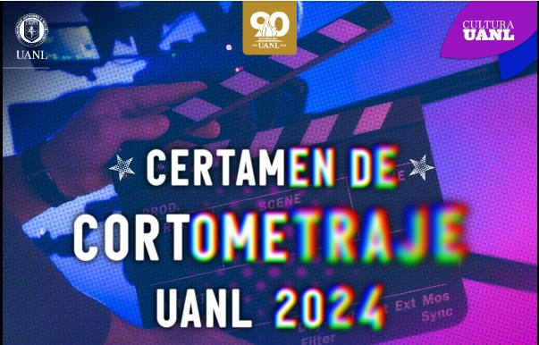
Luis Rodríguez
Próximamente la Universidad Autónoma de Nuevo León a través de la Secretaría de Extensión y Cultura y su Dirección de Desarrollo Cultural, invita a los alumnos a participar en el Certamen de Cortometrajes UANL 2024.
Los que decidan participar deben saber que pueden hacer una película de tema libre, ya sea de ficción, animación o documental, que dure entre 7 y 12 minutos, incluyendo los créditos.
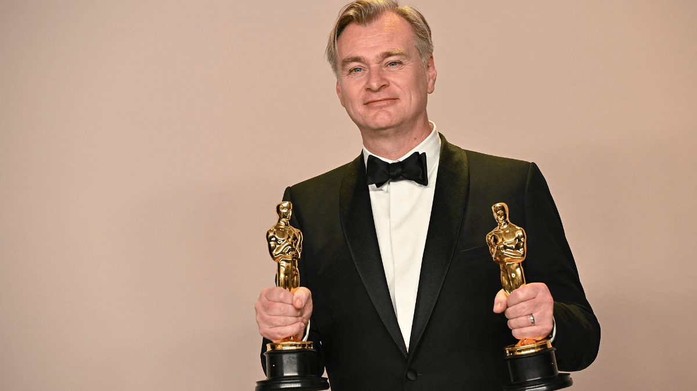
Los trabajos se recibirán llenando la ficha de inscripción que está disponible en: www.cultura.uanl.mx. Se requerirán los datos que se pidan en el formulario y copia de credencial, o boleta de pago de la UANL, y una carta que declare que la obra entregada es de su autoría y no tiene cedidos o prometidos sus derechos en cualquier forma a terceros. También se pedirá el enlace del video.
La fecha límite para la recepción de trabajos es el 31 de Mayo a las 15:00 horas. Los estudiantes pueden aspirar a ganar un premio que varia entre 25k para el primer lugar, 15k el segundo y 10k el tercero, asi que si Así que si tienes habilidades con la cámara o en la animación anímate a presentar tu trabajo!